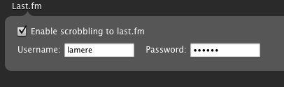
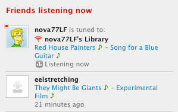

My two favorite music services - now combined!

 Today on the Spotify blog,
Andreas announced that Spotify now supports scrobbling to Last.fm. Once
you set it up,all of your Spotify plays will be automatically
scrobbled.
Today on the Spotify blog,
Andreas announced that Spotify now supports scrobbling to Last.fm. Once
you set it up,all of your Spotify plays will be automatically
scrobbled.

Setting this up just takes a couple of seconds in the Spotify preferences:

Andreas also points out this nifty Greasemonkey script that lets you play the Last.fm site in Spotify. Here's an example, the greasemonky script has added the green music notes to my 'Friends listening now' section. When I click on the green note, spotify opens, ready to play the artist, album or track. Totally cool.

Actually that was Andres, our newish community manager – https://www.spotify.com/blog/archives/2008/11/19/a-short-introduction-of-spotifys-new-community-manager/. :) Thanks for writing about us!
Posted by Andreas Ehn on January 12, 2009 at 07:56 PM EST #
Oh man, I got all excited about this until I found out I couldn't use Spotify since I'm in the U.S...
I really like Grooveshark too, if only it could scrobble to Last.FM!
Posted by air on February 03, 2009 at 09:52 AM EST #